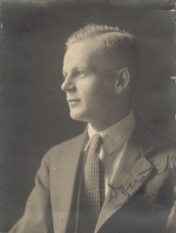
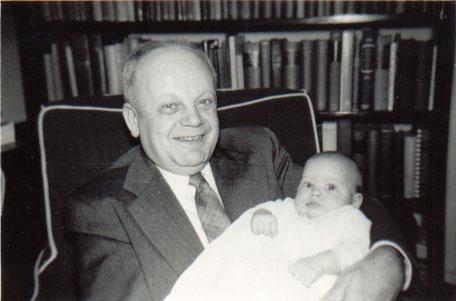

|

|
Frank Bush Marshall was born on the third of July, 1897 in Hagarstown, MD. He was raised by his aunt. He married Catherine Marie Schlag on October 22nd, 1922 in Baltimore and there they had two children. Frank, Jr. was born in 1925, and Maria later on. |
| His grandchildren called him "Grosspop", grofl being the German word for great. He died January 13th, 1962 in Baltimore. |

|